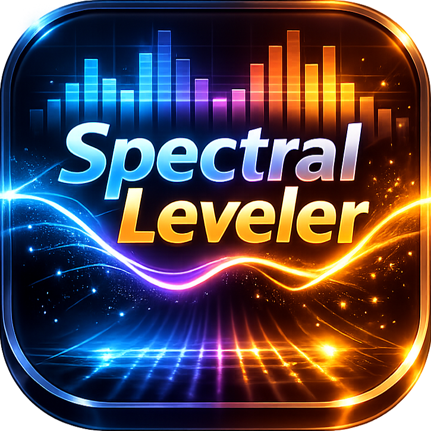
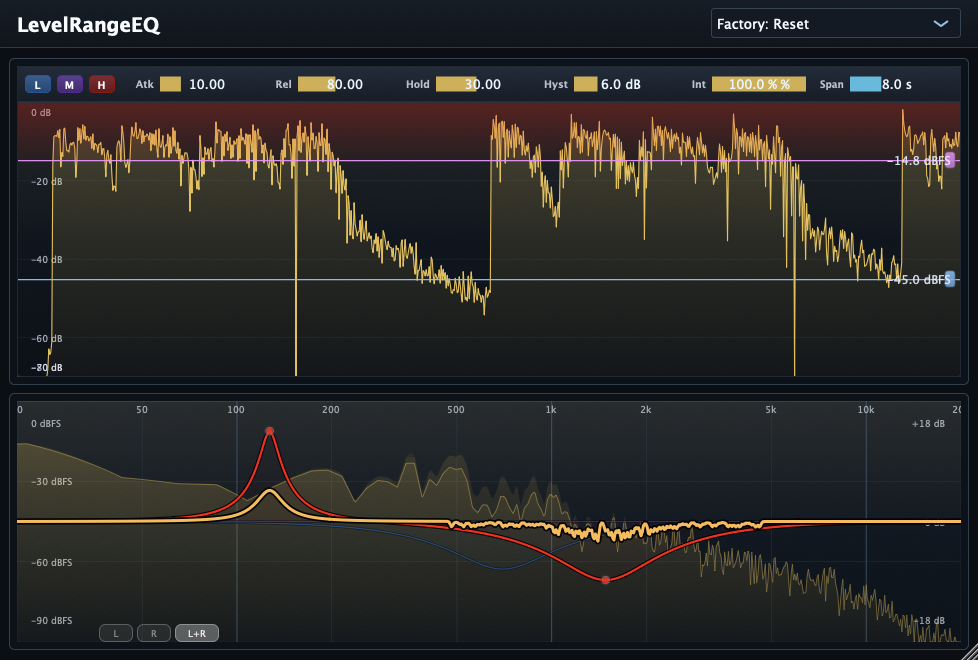

Released — Version 1.2.0.
Real-time spectrogram dynamics tool for voice, dialogue, and musical sources.
Spectral Leveler is a macOS spectral dynamics plug-in ( AAX / AU / VST3) that lets you shape audio by frequency window and level window directly on a real-time spectrogram. Adjust the target range, then control Gain, Attack, and Release for smooth, selective leveling.
Latest release is now available with resizable window support.

Future updates and release notes will be posted here.
v1.2.0 — Resizable window support
2026-03-06
Download: SpectralLeveler_1.2.0.pkg
v1.1.0 — Algorithm refinement update
2026-02-26
Download: SpectralLeveler_1.1.0.pkg
v1.0.0 — Initial public release
2026
Download: SpectralLeveler_1.0.0.pkg
Tame harsh consonants and resonant bands in a selected frequency and level range without flattening the entire voice.
Smooth bright peaks dynamically while preserving body and tone. Great for “just the painful bits” control.
Control string harshness, pick attack spikes, or resonant zones with visual targeting and musical attack / release timing.
Focus on a sibilant frequency window and a high-level dB window to reduce only “S / SH” peaks while leaving the rest of the vocal untouched.
Fast daily cleanup for spoken content: control edgy moments, mouth-noise-heavy bands, or transient spikes without opening a full repair suite.
Use gentle settings to catch occasional spectral peaks in stems or buses where a normal compressor or static EQ feels too broad.
In practice, Spectral Leveler is designed for the “RX is powerful, but I just want to fix this quickly in the DAW” workflow.
SpectralLeveler_1.2.0.pkg from this
page.
Email: kjdevapphelp@gmail.com
Please include: macOS version, host app / Pro Tools version, and a short description (or screenshot) of the issue.